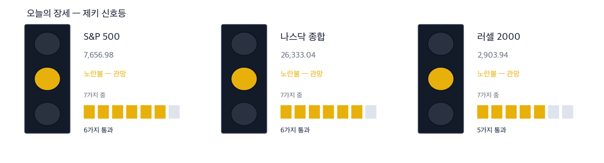
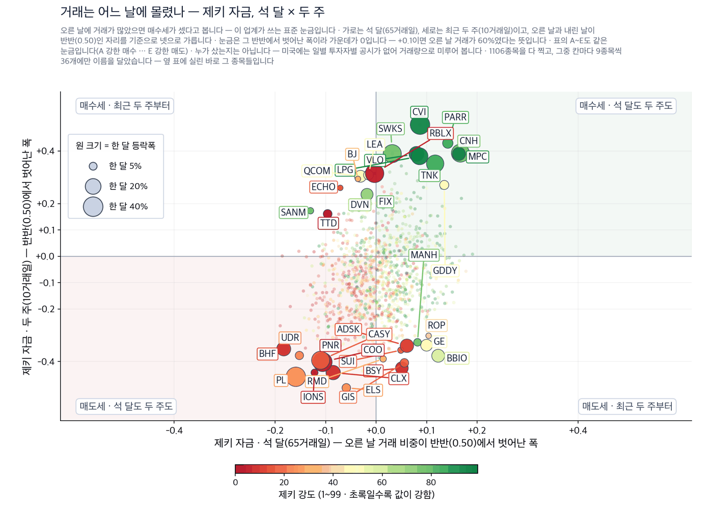
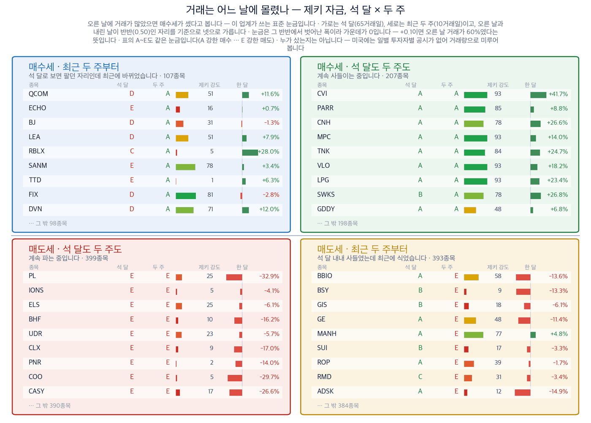
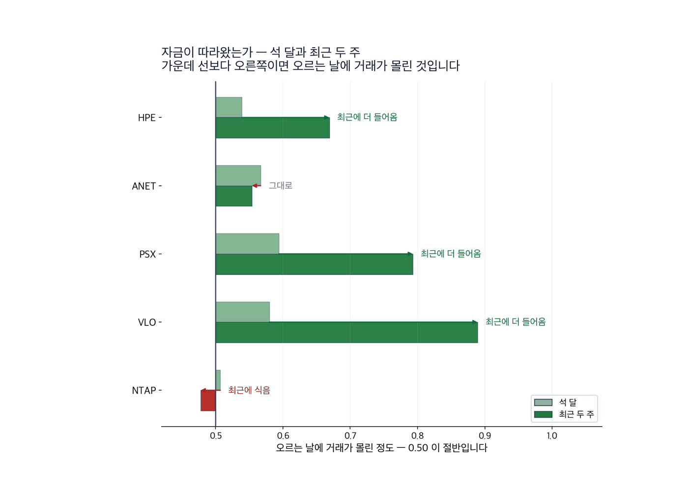

S&P 500 7,656.98 | 나스닥 종합 26,333.04 | 미 국채 10년 4.97% | WTI 원유 $100.05 | 제키 신호등 노란불 |
지난주 뉴욕 증시는 사흘 내리 내렸다가 금요일 하루에 되돌렸습니다. 9월 11일 S&P 500은 7,656.98로, 나스닥 종합은 26,333.04로 마감했습니다. 다우는 52,573.29, 러셀 2000은 2,903.94입니다.
주말 사이 값을 흔든 것은 실적도 지표도 아니었습니다. 인공지능을 만드는 회사들이 스스로 개발 속도를 늦추자고 말했습니다. 앤스로픽 대표가 토요일에 그렇게 썼고, 오픈AI와 xAI 대표가 곧 동의했습니다. 백악관은 반대했습니다. 규제를 늘리면 중국에 뒤진다는 이유입니다. (월스트리트저널·IBD 9월 14일자)
그래서 오늘 물음은 하나입니다. 모델 경쟁이 느려지면, 그 경쟁에 물건을 팔아 온 회사들은 어떻게 되는가입니다. 개장 전 나스닥 100 선물은 1.3% 내렸습니다. 다우 선물은 0.1% 내렸습니다. 지난주 마지막 거래일의 값이 답의 앞부분을 보여 줍니다.

| 켜진 등 | 오늘의 국면입니다. 초록은 매수 우위, 노랑은 관망, 빨강은 매수 자제입니다. |
| 채워진 칸 | 7가지 조건 중 몇 개를 통과했는지입니다. 칸이 많이 찰수록 시장 구조가 튼튼합니다. |
| 칸이 다 찼는데 노랑·빨강이면 | 다른 이유로 한 단계 낮춘 것입니다. 그림 아래에 그 이유를 적었습니다. |
세 지수 모두 노란불입니다. S&P 500과 나스닥은 7가지 가운데 6가지를, 러셀 2000은 5가지를 넘겼습니다. 두 지수가 못 넘긴 것은 52주 저점에서 30% 이상 올라와 있어야 한다는 조건입니다. 러셀 2000은 50일 평균선 아래에 있다는 것이 하나 더 걸렸습니다.
1. 값이 실제로 따라온 곳은 모델이 아니라 장비였습니다. 휴렛팩커드 엔터프라이즈는 9월 11일 하루에 12.4% 올라 52주 신고가에 닿았고, 넷앱은 같은 날 8.5% 올랐습니다. 두 회사는 모델을 만들지 않습니다. 모델을 돌릴 서버와 저장장치를 팝니다. 이미 받은 주문은 개발 속도와 무관하게 납품되고 대금이 들어옵니다.
2. 기름에서는 캐는 쪽보다 정제하는 쪽에 돈이 몰렸습니다. 예멘에서 이란과 가까운 세력이 두 번째 수송로를 손에 넣었습니다. (월스트리트저널 9월 14일자)
원유를 캐는 엑슨모빌의 제키 강도는 74, 셰브런은 73입니다. 정제하는 필립스66과 밸레로에너지는 둘 다 93입니다. 수송로가 막히면 원유보다 제품 값이 먼저 오르기 때문입니다.
3. 엔비디아는 오늘 테마에서 제외합니다. 이야기의 한가운데 있지만 제키 강도가 62이고 제키 자금은 D입니다. 한 달 동안 2.6% 내렸습니다. 기사가 그럴듯해도 값이 따라오지 않으면 종목으로 만들지 않습니다.
| 날짜 | 무엇을 보는가 | 넘으면 어떻게 되는가 |
|---|---|---|
| 9월 15일 화요일 | 통화정책 회의 첫날 | 금리선물은 인상 확률을 87%로 봅니다. 인상이면 올해 첫 인상입니다 |
| 9월 16일 수요일 | 통화정책 결정, 동부시간 오후 2시 | 케빈 워시 의장이 회견을 엽니다. 올리면 10년물이 5%를 넘봅니다 |
| 9월 16일 수요일 | 애플 신제품 공개 | 접는 화면 제품이 나옵니다. 부품을 대는 곳까지 값이 움직입니다 |
앤스로픽 대표는 토요일 글에서 위험을 막을 시간을 벌기 위해 성능이 좋아지는 속도를 늦추자고 했습니다. 오픈AI 대표는 외부 평가를 받겠다고 했고, 일론 머스크 대표는 맞는 말이라고 했습니다. 개장 전 엔비디아 호가는 소폭 하락이었습니다. (IBD 9월 14일자)
그런데 9월 11일에 거래가 몰리며 오른 종목 명단은 모델을 만드는 회사가 아니었습니다. 서버를 만드는 회사 둘이었습니다. 데이터센터는 이미 지어지는 중이고, 개발 속도를 늦춘다고 해서 짓다 만 건물을 비워 두지는 않습니다.
석 달 동안 33.1% 올랐고 52주 신고가에 닿아 있습니다. 약점은 그 상승이 하루에 몰렸다는 것입니다. 먼저 확인할 것은 9월 11일에 올린 폭을 다음 며칠 동안 지키는지입니다. 확인 신호 — 9월 11일 종가 62.09달러 위에서 버티면서 제키 자금이 A에 머무는 경우입니다. 철회 기준 — 9월 11일 종가 62.09달러가 무너지고 제키 자금이 C 아래로 내려가는 경우입니다. |
한 달로는 5.2% 내렸습니다. 석 달 상승분의 일부를 되돌린 것입니다. 네 가지 가운데 세 가지를 넘겼고, 못 넘긴 것이 그 한 달 하락입니다. 확인 신호 — 9월 11일 종가 199.59달러 위에서 한 달 등락이 상승으로 돌아서는 경우입니다. 철회 기준 — 9월 11일 종가 199.59달러가 무너지고 제키 자금이 B 아래로 내려가는 경우입니다. |
네 가지 가운데 두 가지만 넘겼습니다. 하루 상승폭은 컸지만 한 달은 아직 하락이고 석 달 제키 자금도 C입니다. 오늘은 확인이 더 필요한 쪽입니다. 확인 신호 — 9월 11일 종가 199.28달러 위에서 한 달 등락이 상승으로 돌아서는 경우입니다. 철회 기준 — 9월 11일 종가 199.28달러가 무너지고 석 달 제키 자금이 D로 내려가는 경우입니다. |
서부텍사스산원유는 지난주 9.4% 올라 배럴당 100.05달러로 마쳤습니다. 두 주 동안으로는 20% 올랐습니다. 월요일 개장 전에는 배럴당 102달러를 넘었습니다. (IBD 9월 14일자)
이유는 수요가 아니라 길입니다. 예멘에서 이란과 가까운 무장세력이 영토를 넓히면서 이 지역의 두 번째 에너지 수송로가 그들의 영향 아래 들어갔습니다. (월스트리트저널 9월 14일자)
길이 좁아지면 원유를 캐는 회사보다 그 원유를 제품으로 바꾸는 회사가 먼저 값을 받습니다. 정제마진이 넓어지기 때문입니다.
네 가지를 모두 넘겼습니다. 다만 근거가 기름값 하나에 걸려 있습니다. 수송로 문제가 풀리면 오른 이유도 같이 사라집니다. 확인 신호 — 서부텍사스산원유가 배럴당 100달러 위에 머물고 9월 11일 종가 259.47달러를 지키는 경우입니다. 철회 기준 — 9월 11일 종가 259.47달러가 무너지고 원유가 배럴당 90달러 아래로 내려가는 경우입니다. |
네 가지를 모두 넘겼고 최근 두 주 자금이 가장 두껍습니다. 약점은 52주 신고가라는 자리 자체입니다. 되돌림이 오면 받아 줄 값이 아래에 없습니다. 확인 신호 — 서부텍사스산원유가 배럴당 100달러 위에 머물고 9월 11일 종가 390.42달러를 지키는 경우입니다. 철회 기준 — 9월 11일 종가 390.42달러가 무너지고 두 주 제키 자금이 B 아래로 내려가는 경우입니다. |
| 테마 | 오늘의 판정 | 왜 그렇게 보았는가 |
|---|---|---|
| 모델을 만드는 회사 | 제외 | 엔비디아의 제키 강도는 62이고 석 달 제키 자금은 D입니다. 한 달 동안 2.6% 내렸습니다. 이야기의 한가운데 있지만 값이 따라오지 않았습니다. |
| 금리로 버는 회사 | 제외 | 미 국채 10년물이 2023년 10월 이후 가장 높은 자리까지 올랐습니다. 그런데 JP모간은 한 달 동안 2.5%, 뱅크오브아메리카는 3.3% 내렸습니다. 금리 이야기는 그럴듯하지만 은행 주가가 따라오지 않았습니다. |
| 테마 | 종목 | 제키 강도 | 근거의 무게 |
|---|---|---|---|
| 모델이 아니라 기계를 파는 곳 | 휴렛팩커드 엔터프라이즈 (HPE) | 93 | 근거 확실 |
| 모델이 아니라 기계를 파는 곳 | 아리스타 네트웍스 (ANET) | 93 | 근거 있음 |
| 모델이 아니라 기계를 파는 곳 | 넷앱 (NTAP) | 93 | 확인 필요 |
| 기름값이 오른 뒤 돈이 간 곳 | 필립스66 (PSX) | 93 | 근거 확실 |
| 기름값이 오른 뒤 돈이 간 곳 | 밸레로에너지 (VLO) | 93 | 근거 확실 |
한 달 상승, 제키 강도 90 이상, 석 달 제키 자금 A나 B, 최근 두 주에 그 등급이 낮아지지 않았을 것. 이 4가지를 셉니다. 미국에는 누가 샀는지를 날마다 공시하는 제도가 없어서, 같은 물음을 거래량으로 바꿔 묻습니다. 값은 9월 11일 종가 기준입니다.
| 종목 | ①값이 올랐나 | ②강도 90↑ | ③자금 석 달 A~B | ④두 주 안 꺾임 | 충족 | 근거의 무게 |
|---|---|---|---|---|---|---|
| 휴렛팩커드 엔터프라이즈 (HPE) | O | O | O | O | 4/4 | 근거 확실 |
| 아리스타 네트웍스 (ANET) | X | O | O | O | 3/4 | 근거 있음 |
| 넷앱 (NTAP) | X | O | X | O | 2/4 | 확인 필요 |
| 필립스66 (PSX) | O | O | O | O | 4/4 | 근거 확실 |
| 밸레로에너지 (VLO) | O | O | O | O | 4/4 | 근거 확실 |

| 점 하나 | 종목 하나입니다. 가로·세로 위치가 두 값을 그대로 나타내고, 가운데 가로·세로로 그어진 두 선이 기준선입니다. 네 귀퉁이의 이름표가 그 칸의 뜻입니다. |
| 점 크기 | 최근 한 달 등락폭입니다. 오르든 내리든 크게 움직였으면 큰 점입니다. |
| 점 색 | 제키 강도입니다. 초록일수록 주가가 시장에서 강합니다. |
| 30종목만 | 이름이 겹치면 못 읽기 때문입니다. 가운데 몰린 나머지는 움직임이 거의 없는 종목들이라 뺐습니다. |

| 네 칸 | 가로와 세로 두 값이 각각 기준선을 넘었는지로 넷을 가릅니다. 오른쪽 위는 둘 다 넘은 곳, 왼쪽 아래는 둘 다 못 넘은 곳, 나머지 두 칸은 한쪽만 넘은 곳입니다. 칸 이름이 그 칸에 든 종목의 상태를 한 문장으로 적어 둔 것입니다. |
| 가운데 두 칸 | 두 기간을 견주는 자리입니다. 글자 A~E가 있으면 이 업계가 쓰는 표준 등급으로, A는 강한 매수, B는 매수 우세, C는 매수와 매도가 반반, D는 매도 우세, E는 강한 매도를 뜻합니다(전체를 다섯으로 나눈 순위라 A가 상위 20%입니다). 숫자가 있으면 그 기간의 순매수 규모입니다. |
| 칸마다 9종목 | 그 칸에서 움직임이 가장 큰 순서입니다. 나머지는 칸 아래에 몇 종목인지만 적었습니다. 옆 산점도가 이름을 다는 종목이 바로 이 9종목씩입니다. |
| 한 달 막대 | 0을 가운데 두고 오른쪽이 상승, 왼쪽이 하락입니다. 길이는 같은 칸 안에서만 서로 견주십시오 — 칸마다 기준이 다릅니다. |
| 제키 강도 | 1~99 순위입니다. 막대가 길수록, 초록에 가까울수록 그 종목의 주가가 시장에서 강합니다. |
| 종목 | 상승일 대비 거래량 | 한 달 | 기준일 |
|---|---|---|---|
| URGN | 0.69 | -13.7% | 09-11 |
| RLI | 0.68 | -3.9% | 09-11 |
| KNSA | 0.67 | -2.4% | 09-11 |
| EMBJ | 0.67 | +2.1% | 09-11 |
| CNH | 0.67 | +26.6% | 09-11 |
| 종목 | 상승일 대비 거래량 | 한 달 | 기준일 |
|---|---|---|---|
| MPT | 0.31 | -10.1% | 09-11 |
| ROL | 0.31 | -4.9% | 09-11 |
| BHF | 0.32 | -16.2% | 09-11 |
| BIRK | 0.33 | -15.3% | 09-11 |
| PL | 0.34 | -32.9% | 09-11 |
기사가 맞아도 자금은 따로 봅니다. 오늘 고른 5종목의 석 달과 최근 두 주를 나란히 놓았습니다. 가운데 선보다 오른쪽이면 오르는 날에 거래가 더 몰렸다는 뜻입니다.

| 막대 둘 | 위가 석 달, 아래가 최근 두 주입니다. 같은 종목의 두 기간을 나란히 놓았습니다. |
| 가운데 선 | 0.50 입니다. 오른쪽이면 오르는 날에 거래가 더 몰렸고, 왼쪽이면 내리는 날에 몰렸습니다. |
| 화살표 | 석 달에서 두 주로 가는 방향입니다. 오른쪽으로 가면 최근에 더 들어온 것이고, 왼쪽이면 식은 것입니다. |
| 맨 오른쪽 글씨 | 그 방향을 말로 적은 것입니다 — 「최근에 더 들어옴」이면 자금이 이어지는 중입니다. |
정유 두 곳은 두 기간 모두 오른쪽에 있고 최근 두 주가 더 두껍습니다. 휴렛팩커드 엔터프라이즈도 두 주 쪽이 더 두껍습니다. 넷앱은 석 달이 가운데 선에 가깝습니다. 이 그림은 지금까지 누가 샀는지를 보여 줄 뿐이며 앞으로의 값을 예고하지 않습니다. 두 시장에서 재 보니 이 값만으로는 다음 한 달을 맞히지 못했습니다.
| 언제 | 무엇을 보는가 |
|---|---|
| 개장 30분 | 나스닥 100 선물이 개장 전 1.3% 하락으로 열렸습니다. 그 하락분을 30분 안에 되돌리는지 봅니다. 되돌리지 못하면 속도 조절 이야기가 하루로 끝나지 않는다는 뜻입니다. |
| 장중 내내 | 서부텍사스산원유가 배럴당 100달러 위에 머무는지 봅니다. 그 아래로 내려가면 정유 두 곳의 근거가 먼저 얇아집니다. |
| 장중 내내 | 미 국채 10년물이 5%를 넘는지 봅니다. 넘으면 값이 비싼 기술주부터 제값을 못 받습니다. |
| 마감 30분 | 거래가 몰리며 오른 종목에 오늘 고른 5종목이 들어가는지 봅니다. |
| 말 | 뜻 |
|---|---|
| 제키 강도 | 저희가 계산한 순위입니다. 1에서 99까지이며, 90이 넘으면 미국 상장 종목 가운데 상위 10% 안에 든다는 뜻입니다. |
| 제키 자금 | 오르는 날의 거래량과 내리는 날의 거래량을 최근 13주에 걸쳐 견준 값입니다. 0.50을 넘으면 오르는 날에 더 많이 거래됐습니다. A에서 E까지 다섯으로 나눈 등급이며 A가 상위 20%입니다. |
| 제키 신호등 | 지수가 7가지 조건 가운데 몇 가지를 넘겼는지로 정한 국면입니다. 초록불은 매수 우위, 노란불은 관망, 빨간불은 매수 자제입니다. |